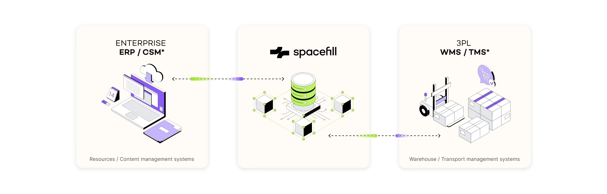
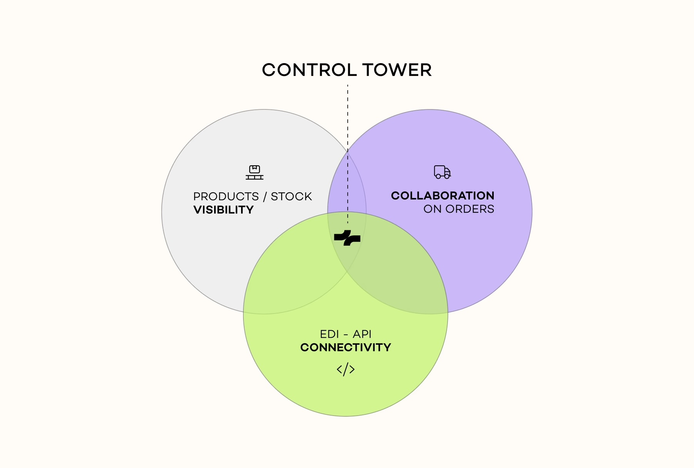
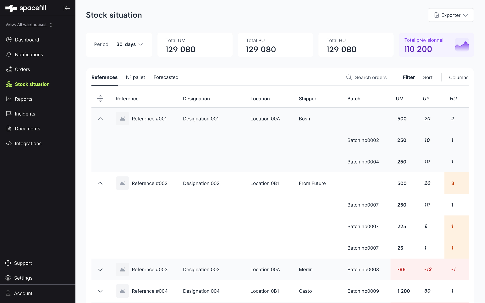
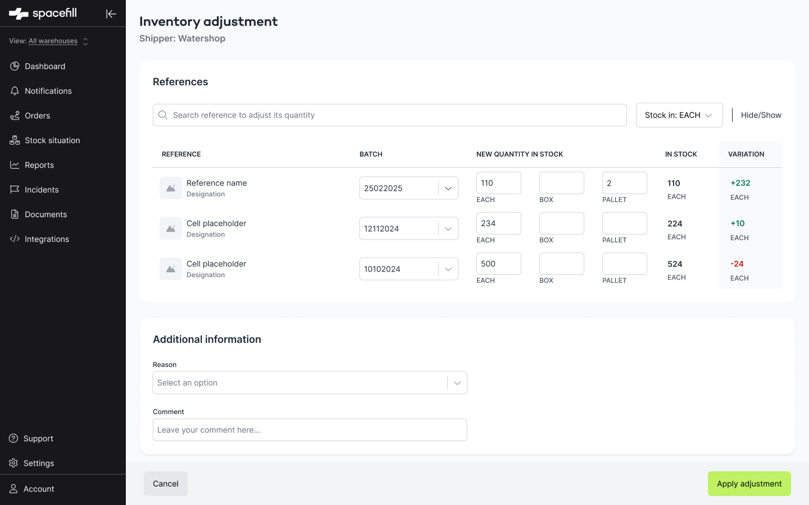

Business context
Spacefill was at an inflection point — transitioning from a marketplace model to a 100% SaaS subscription product targeting SMBs. Three objectives defined the work: increase paid accounts, reach shippers and LSPs at scale, and build a product worth paying for.
The platform was built around three strategic pillars:
A deeper structural problem made everything harder: LSPs weren't rigorous about updating orders, which cascaded into inaccurate inventory. Before improving the UI, we had to fix the data collection layer itself.


Research
Before designing anything, I ran 8 user interviews across key accounts: Ikea, Leroy Merlin, Sézane, Arkolia, FEFE, Linxens, IES, and Transport Dupas Lebeda.
Key findings
- Pickup date logic was confusing when LSPs managed transport — only the delivery date matters to shippers
- Users couldn't identify what information was shared with their LSP
- Multi-unit stock (pallets, boxes, units) created constant calculation errors
"I see the order status, but I don't know what it means or it doesn't match reality."
— User interview, Watershop
"I cannot create orders without a date — what I really need is to know when the truck will arrive in store."
— Sales × Supply Support at Ikea
Feature 1 — Order Workflow Redesign
Pillar: 🤝 Collaboration on orders
Problem
The order creation flow was rigid and time-consuming — 48 minutes average for some users. But the first signal came from the CSM team, who were handling a constant stream of last-minute modification requests: wrong times, missing references, date changes inside notice periods.
Digging deeper through screen recordings and user interviews revealed the root cause: shippers were being asked to enter pickup and delivery dates — but scheduling is the LSP's responsibility when they handle transport. Shippers have one priority: their customer receives the order on time. The form had been built around the wrong mental model entirely.
A second problem surfaced around references: shippers were copy-pasting quantities from their own ERP, but unit types didn't match. Because of WMS integration constraints, Spacefill was dependent on the logistics provider's system — while shippers ordered in "boxes", the platform required "eaches". Every order required manual unit translation, and mistakes were routine.
Solution — 3 core principles
- Date logic split: when LSP handles transport → only delivery date required. Pickup date removed from the shipper's flow entirely
- Flexible notice period configuration per contract, with bypass allowed if order preparation hasn't started
- Comment space per order to keep all information inside the platform — last-minute modifications, questions, and updates stay traceable
- Inline reference creation during order flow — no more tab-switching to add a missing reference mid-order
Feature 2 — Inventory & Stock Architecture
Pillar: 🗂 Inventory visibility
Problem
The stock page was a flat list with no hierarchy. LSPs manage stock at the batch level, but the UI showed everything at reference level only. Adjusting inventory was done blind — no real-time feedback, no variation preview, no multi-unit support. A wrong adjustment cascaded into incorrect orders and billing disputes.
Solution
Stock situation page
- Hierarchical table: references expand to show batch-level rows
- 4 KPI summary cards at the top (total refs, total stock, forecasted, alerts)
- Search + filters + group by + column visibility controls
Inventory adjustment
- 3 parallel inputs: EACH / BOX / PALLET
- Auto-conversion between units (1 pallet = 100 each)
- Variation displayed immediately in green (+) or red (−)
- Inputs disabled if no batch is selected (preventing orphan adjustments)


Example:
Enter 2 pallets + 142 each.
Previous stock was 1 pallet + 10 each, so equal to 110 each.
System calculates: 342 − 110 = +232 each — shown instantly.
Feature 3 — Incidents & Communication
Pillar: 🗼 Control Tower
Problem
Incidents happened constantly — wrong quantities, missing references, late deliveries, schedule changes during notice periods. But none of it was tracked inside the platform. Information scattered across emails, phone calls, and ERPs with no shared written trace, no accountability, and no way to spot patterns. CSM teams spent a disproportionate amount of time resolving errors between shippers and LSPs instead of doing higher-value work.
The incident module was also the most requested feature during sales calls — prospects named it as a condition for switching from their existing tools. It was both a retention problem and a sales blocker.
Solution
Incident reporting
- Report any incident type directly on an order — missing references, incorrect quantities, delivery delays, notice period violations
- Categorised incident types for consistent tracking across accounts
- Linked to the relevant order for full context
In-platform communication
- Notify all order stakeholders instantly — no more email chains or phone calls with no trace
- Message thread + document sharing per incident, keeping all evidence in one place
- Shared visibility between shipper and LSP — no more "I didn't know"

Expected impact
Centralising incident communication inside the platform frees CSM teams from acting as message relays — giving them time back for higher-value customer work. Shippers and LSPs share a single written record, reducing disputes and making accountability visible on both sides.
- Recurring incident types surfaced by frequency — patterns become visible instead of buried in email threads
- Monthly trend analysis drives continuous improvement on service quality and operational reliability
Process
Takeaways
I couldn't design everything — the 3-pillar framework kept prioritization aligned even when requests came from every direction.
The inventory issues weren't just visual — they stemmed from missing data. Fixing the collection layer before redesigning the display was the key insight.
Every confusing label or missing confirmation creates real operational cost. Design precision matters more here than anywhere.